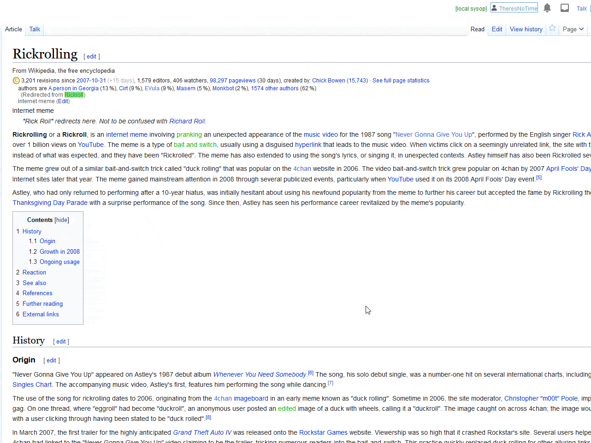

Just read the citations
Okay, we get it, anyone can edit Wikipedia, so clearly it's very "unreliable" — have you tried reading the citations though?
Why do people call Wikipedia unreliable?
Other than it being easier than actually having to debate a topic intelligently, when the majority of people say Wikipedia is "unreliable", they tend to be referring to the fact that anyone can edit it, and that a nefarious individual could vandalise an article and add some false information.
How does Wikipedia combat this?
Incidents of vandalism are common, but they are often removed within seconds by automated bots, or flagged by their vandalism-detecting AI. Any vandalism not immediately removed is normally seen within a few minutes by human patrollers.
Hoax information is routinely challenged, and most patrollers will err on the side of caution and remove additions which do not cite a reliable source.
What are reliable sources?
Almost every statement of fact on Wikipedia has to be backed up by a reliable source (otherwise known as a citation), to ensure the verifiability of the statement being made — precisely what counts as a reliable source is closely moderated and routinely discussed, but it tends to boil down to things like peer-reviewed journals and news outlets which have editorial review.
No, your blog doesn't count.
Hang on, even schools don't let y'all cite Wikipedia!
And they're right not to! Similar to how you wouldn't normally cite a print encyclopaedia, directly citing Wikipedia has never been allowed — to be honest, it's quite an odd gotcha people throw around.
Smart students, however, read the citations and use those instead...
Okay, fine, how do I read the citations?
It's really simple: find a statement of fact in an article and click the little blue number next to it — you'll be taken to the bottom of the page and the relevant citation will be highlighted.

What if the cited source is unreliable or doesn't support the claim?
Well first of all, you can now enjoy the smug satisfaction of telling your friend not just that Wikipedia is unreliable, but that Wikipedia's source is unreliable. Then, if you'd like to help, you can fix the article. Make sure to use a descriptive edit summary, so that your change isn't mistaken for vandalism. Say something like "Random YouTube videos like https://www.youtube.com/watch?v=dQw4w9WgXcQ aren't reliable sources" or "Page 57 of Steven Chu's autobiography doesn't mention the scroll lock key at all". If you are unable to edit the page because it is semi-protected, there will be instructions in the editing window on how to request an edit instead.
tl;dr
Lazy sod.
The next time someone sends you a Wikipedia article to prove their point, instead of proudly declaring "HAH! Don't you know anyone can edit Wikipedia?!", find the statement in the article they are referring to and read the reliable source instead.
If the statement your opponent is referencing doesn't have an inline citation (or if the citation actually says something else), then by all means call them out.